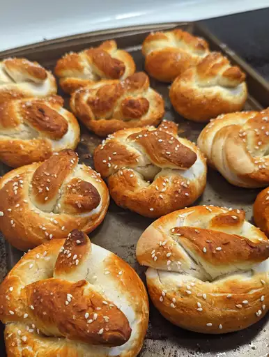

Pretzel Recipe

Description:
This soft pretzel recipe is great! After spending so much money on those mall pretzels, I thought I'd try making some myself. They are a bit sweeter than other types and are buttery. Once finished, dip the hot pretzel in melted butter and coat with your favorite flavors.
Ingredients:
- 1 ¼ cups warm water (110 degrees F/45 degrees C), or more as needed
- 4 teaspoons active dry yeast
- 1 teaspoon white sugar
- 5 cups all-purpose flour
- ½ cup white sugar
- 1 ½ teaspoons salt
- 1 tablespoon vegetable oil, or more as needed
- ½ cup baking soda
- 4 cups hot water
- ¼ cup kosher salt, for topping
Steps:
- Pour 1 1/4 cups warm water into a medium bowl. Dissolve yeast and 1 teaspoon sugar in warm water; let stand until creamy, about 10 minutes.
- Mix flour, 1/2 cup sugar, and salt together in a large bowl. Make a well in the center; add yeast mixture and oil. Mix well and form into a dough. If mixture is dry, add one or two more tablespoons of water.
- Knead dough until smooth, about 7 minutes. Lightly oil a large bowl, place dough in the bowl, and turn to coat with oil. Cover with plastic wrap and let rise in a warm place until doubled in size, about 1 hour.
- Preheat the oven to 450 degrees F (230 degrees C). Grease 2 baking sheets.
- Pour 4 cups hot water into a large bowl. Stir in baking soda until dissolved; set aside.
- Turn dough out onto a lightly floured surface and divide into 12 equal pieces. Roll each piece into a rope and twist into a pretzel shape.
- Once all of the dough is shaped, dip each pretzel into the baking soda-hot water solution and place on the prepared baking sheets. Sprinkle with kosher salt.
- Bake in preheated oven until browned, about 8 minutes.
- Enjoy!